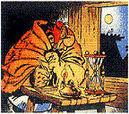
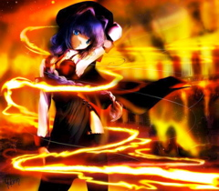

Forums galactiques > Taverne galactique : lieu de discussion informel > musée des poèmes
| KoKO Réputation à la taverne : 200  29/12 ETU 16:03 | Score : 2 Détails Un musée des poèmes est ouvert
vous avez l'âme d'un écrivain ou souhaité la mettre en avant venez ici! L'exposition de votre oeuvre est totalement gratuite et pour chaque oeuvre envoyer vous recevrez 1 mo ,si vous vous occupez du transport biensûr . Bien-sûr vous pouvez faire un poème qui sera dans le musée destiné pour quelqu'un . les remarques sont les bienvenues si elles sont en rapport avec les poèmes sinon faites sa ailleurs ne pourrissez pas ce musée merci . Le poème qui suit est destiné à l'empire cronosite . L'empire cronosite n'est qu'une dictature. je vais sans doute me faire démolir. devant la puissance militaire de celui ci. Et je lui dirais merci. Car je serais peut être mort. Même si celui ci a tort. Donc viens me faire mordre la poussière. Car je n'ai pas peur de finir en terre. Mais ma mort n'aura pas était inutile. Comme sa le peuple verra comment tu utilise tes missiles. Et je garderais en politique ma position. Vive le droit d'expression . | ||
| KoKO Réputation à la taverne : 200 30/12 ETU 00:21 | Score : 0 Détails U
P | ||
| Blackstar Réputation à la taverne : 350  30/12 ETU 09:21 | Score : 2 Détails Vive le Gouvernement Oligarque,
Laissez-vous guider par sa voix, Celle-ci vous guidera à coup sûr, Vers un bonheur réel, Voir même vers une vie éternelle. Laissez-vous mener, Nous sommes là pour vous aider, Et pas pour couler, Ni vous tuer. Rêvons ensemble, construisons ensemble. Vive le Gouvernement Oligarque! | ||
| KoKO Réputation à la taverne : 200 30/12 ETU 19:39 | Score : 0 Détails Poéme de blackstar que j'ai entendu dehors .[rp]
Etoiles du soir, Etoiles du matin, Que votre puissance nous éblouisse, Que votre aura nous protège, De tout et de tous, QUe notre Amour soit éternel. | ||
| Le Poète Réputation à la taverne : 55  17/01 ETU 18:18  | Score : 7 Détails J'espere que c'est ici.
Voici l'acrostiche d'Esperance Entends-tu, je perds mon sang froid! Sans toi je pourrais me tuer Partons sur Mars, et puis voilà, Etourdis par l'odeur des blés Rions fort de notre insouciance Artistes en pleine création Nous irons voyager en France Combattons tous les cornichons! Esperance aime moi! Le Poète | ||
| delius Réputation à la taverne : 29  17/01 ETU 18:21 | Score : 0 Détails non ce n'est pas ici mais profité en vu que KoKo le ouvert (je suis chiant surement)
| ||
| Felinia's return Réputation à la taverne : 354  17/01 ETU 18:39 | Score : 0 Détails (oui !)
| ||
| Le Poète Réputation à la taverne : 55 17/01 ETU 18:42 | Score : 0 Détails Bon je vais reprendre la salle que j'ai ouverte
| ||
| Leia la sanguinaire Réputation à la taverne : 46  17/01 ETU 18:49 | Score : 6 Détails Dans tes yeux je me perds ,
Mais ton coeur est il ouvert, Mes sentiments ce mélangans, Mais point ne doutant, De ta part une seule preuve suffirait, Pourvu qu' elle soit vrai. | ||
| Le Poète Réputation à la taverne : 55 17/01 ETU 19:23 | Score : 0 Détails Vous êtes très douée Leia
| ||
| KoKO Réputation à la taverne : 200 17/01 ETU 19:29 | Score : 4 Détails Titre : Les tires hyperatomiques.
Sous cette pluie il s'y trouve lui Mais celle-ci n'en est pas une Car elle viens de la lune Car c'est des tires hyperatomique ET c'est alors pas comique Alors arrivent les pleures Car celui-ci voit venir sa dernière heure. Celui qui avait lancé ces tires avait sans doute tort Mais il n'entendit pas de plaintes car ils étaient tous mort . | ||
| KURT Réputation à la taverne : 377  17/01 ETU 19:30 | Score : 9 Détails Pour toi Leia.
Entre tes bras, Je ne vois que toi, Je m'y sens si bien, Qu'il faudrait qu'on y change rien, Je voudrai juste te donner un baiser, Mais je risque de tout gacher, Te perdre à jamais, Jamais je ne mis ferais. | ||
| faust VIII Réputation à la taverne : 218  17/01 ETU 20:32 | Score : 4 Détails La fin d’un cycle
Je trébuche sur un corps sans vie Je ne sent plus mes membres Et maintenant arrive la pluie J’aimerais être dans ma chambre La bataille fait rage autour de moi Des soldat armés se rentre dedans Une lame se plante dans mon estomac Je la regarde et je comprends Un voile obscurcit mon regard Mon cœur s’arrête maintenant Pour me sauver il est trop tard Je rejoint les cieux a présent Je m’envole vers le paradis Pays de rêves et de magie Ou tout commence et se finit | ||
| KoKO Réputation à la taverne : 200 17/01 ETU 20:42 | Score : 4 Détails Titre:L'amour .
Dans la nuit Tu t'ennuies Alors quelqu'un arrive A cette heure tardive Et s'approche doucement De toi gentiment Tu la reconnais alors Car c'est quelqu'un qui à tes yeux vaut plus que l'or. Elle s'assit à coté de toi ce qui te rend joyeux Et vous regardez alors les étoiles en amoureux . | ||
| Le Poète Réputation à la taverne : 55 17/01 ETU 20:49 | Score : 6 Détails J'errais sous le ciel rouge et azur
Quand une belle main vint m'émouvoir à l'extrême, Deux sabres bleus, transperçant mon armure, Des cheveux blonds, une auréole, même, Vinrent sans vergogne me faire frémir Me montrant la voie du soleil, Tel un phoenix volant vers l'avenir, Et dont les plumes sont arc-en-ciel. Et cet oiseau, Lady, c'est moi. Et cette magnifique nymphe, incarnant la liberté, C'est toi, Lady, c'est toi... C'est chez toi que mon coeur a frappé. Le Poète | ||
| KURT Réputation à la taverne : 377 17/01 ETU 20:51 | Score : 9 Détails Le baiser
Pour un instant, nous avons tout oublié Le passé, le présent et le futur Nous avons frappé un mur Lorsque le temps a recommencé C'était au mois de janvier Nos lèvres se sont finalement rencontrées Nous nous sommes embrassés Comme si c'était pour l'éternité C'était une belle journée ensoleillée Lorsque nous avons échangé ce baiser Il contenait tout ce dont nous rêvions Il contenait tout ce que nous espérions Il était parfait Ce baiser secret C'était notre tout premier Et sûrment pas notre dernier | ||
| Le Poète Réputation à la taverne : 55 18/01 ETU 07:42 | Score : 5 Détails Prends ma main qui tremble pour toi
Où pourrai-je enfin t'embrasser? Elis-moi pour dix septennats! Soleil d'hiver et pluie d'été Imprégnés de vive impatience Effaçons les ponctuations! Le Poète | ||
| KoKO Réputation à la taverne : 200 18/01 ETU 13:46 | Score : 4 Détails Titre :Sous le régime cronosite
Un homme se fit arrêter par la police. Mais pourquoi autant d'injustice ? Le corps de l'homme fut alors retrouver mort. Ces policiers l'était t'il vraiment alors ? Oui car nous parlons d'un gouvernement pas démocratique. Et cet homme avait eu le courage de sortir une critique Une critique sur un gouvernement détenu par Détah ,fils de Cronos . Car si dans ce régime on le défis ,on peut finir en tat d'os. Nous ,on a pas peur et on s'en fout. Car nous ,on est des fous . | ||
| KURT Réputation à la taverne : 377 18/01 ETU 18:50 | Score : 5 Détails Mon étoile
Je voudrai donner tant d'éclat tant de splendeur A mon étoile qui ne brille plus et qui s'enfonce Dans la clarté du jour apparent sans ciel bleu Et ne s'éleve plus dans le ciel si clair. Elle devient sombre comme mon être Ma vie ne me sourit plus,mon malheur est la Je ressens en moi cette étrange sensation Comme si elle s' 'éloignait peu a peu de moi Comme si ma vie s'arrêtait dans ce monde Ou les abimes regnent en maitre Je regarde ce ciel et je la vois disparaitre Peu a peu s'essoufler laissant apparaitre Un ciel glacé sans amour,sans vie,sans passion Que j'en meurs sans l'espoir de lui rendre son éclat | ||
| faust VIII Réputation à la taverne : 218 18/01 ETU 20:12 | Score : 4 Détails Je commence a stresser
Mon corps bouillonne J’ai les mains glacée Il paraît que j’en fait des tonnes La porte s’ouvre a présent La peur s’éveille en moi Je me met sur mes jambes en tremblant Je frissonne tant j’ai froid Je ne peux me dégonfler maintenant J’avance d’un pas Et l’extase m’envahit J’hurle un cri de joie Et je pense que je suis au paradis Enfin j’atterris et l’adrénaline chute Un jour j’en suis sur je referais un saut en parachute |
Forums galactiques > Taverne galactique : lieu de discussion informel > musée des poèmes